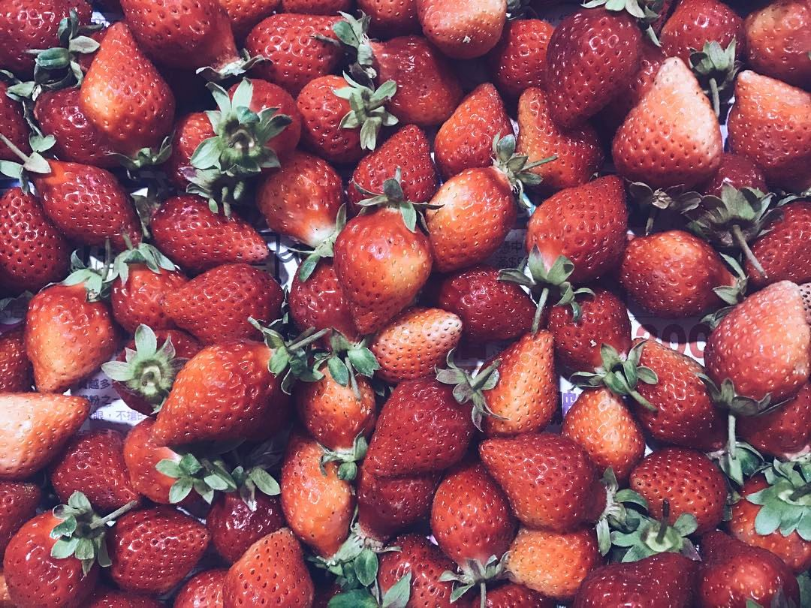

堅持

口感
日本原裝swan刨冰機、日本原裝初雪刨冰機

味覺
結合日本食材與當地當令嚴選食材
美感
less is more 只留下最重要的元素
專門提供日式冰品
店內提供舒適放鬆的環境，藉由冰品和日式空間，彷彿置身京都小店，滿足味覺與視覺雙饗宴。
本店與鹽埕周招其他特色小店共同參與老鹽埕成長，讓年輕人與老一輩人共享記憶中的鹽埕風光。
在2018年的冬天尾巴跟春天開始的這個時間點，
我們又醒來了。
在冬眠的這段時間，我們做了室內小幅度的變動，
以及例行性的更新菜單，最重要的是我們想讓大家吃冰吃得更健康
除了繼續使用嚴選食材以外，還將冰品份量減少，相對的價格也降低了。
日本原裝swan刨冰機、日本原裝初雪刨冰機
結合日本食材與當地當令嚴選食材
less is more 只留下最重要的元素
雪花冰、刨冰
丸九小山園
有機胡蘿蔔
進口栗子
高雄市鹽埕區富野路56巷10號
鹽埕埔捷運站2號出口步行約5分鐘左右即可到達。